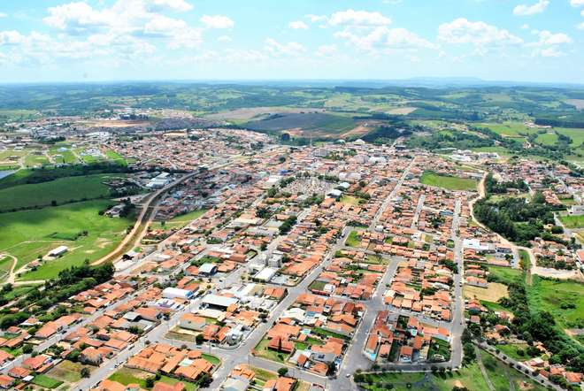

A CIDADE
Pilar do Sul é uma cidade hospitaleira que preserva os costumes caboclos, típicos da cidade do interior, favorecendo a qualidade de vida de quem escolhe a cidade como lar. Atualmente cresce a cada ano dando destaque ao desenvolvimento agropecuário que é responsável por 70% da economia do município. A potencialidade turística do município evidente em vários aspectos é um novo reforço para a economia do município que é conhecido como a Nascente das Águas.
Pilar do Sul é um município brasileiro do estado de São Paulo, situa-se na Região Metropolitana de Sorocaba, na Mesorregião Macro Metropolitana Paulista e na Microrregião de Piedade.
Curiosidades e Dados:
- População estimada [2018]: 28.963 pessoas
- População no último censo [2010]: 26.406 pessoas
- Densidade demográfica [2010]: 38,77 hab/km²
- Código do Município: 3537909
- Área da unidade territorial [2017]: 681,248 km²
- Esgotamento sanitário adequado [2010]: 82,8 %
- Arborização de vias públicas [2010]: 62,3 %
- Urbanização de vias públicas [2010]: 18,1 %
- Gentílico: pilarense